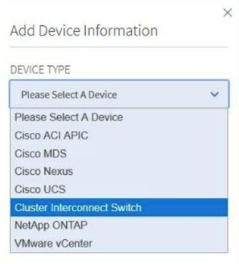
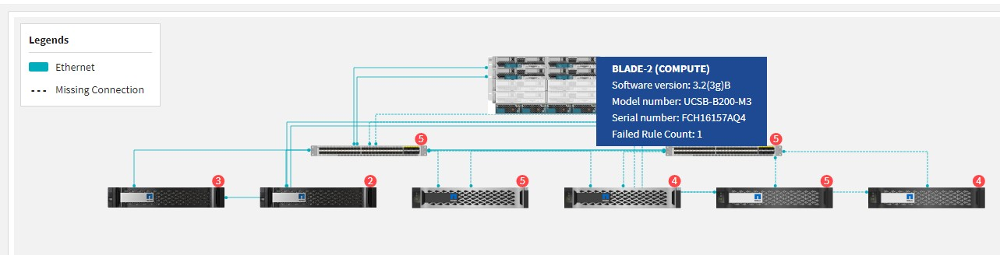
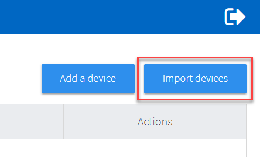
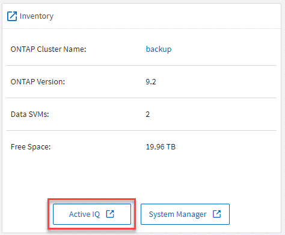

Richiedi modifiche alla documentazione
Richiedi modifiche alla documentazione Modifica questa pagina
Modifica questa pagina Scopri come collaborare
Scopri come collaborareArchivio di "What’s new in Converged Systems Advisor"
Collaboratori
NetApp aggiorna periodicamente Converged Systems Advisor per offrire nuove funzionalità, miglioramenti e correzioni di bug.
Per confermare che i componenti FlexPod sono supportati dall’agente CSA, fare riferimento a. "Tool di matrice di interoperabilità NetApp" (IMT).
Contenuto
Questo archivio contiene informazioni relative alle seguenti release:
30 aprile 2020
Questa versione include i seguenti miglioramenti:
Upgrade Advisor
Ora è possibile verificare la compatibilità delle versioni di VMware vCenter e ONTAP con i componenti Nexus e UCS. Per verificare la compatibilità, utilizzare Upgrade Advisor nella dashboard sotto firmware Interoperability (interoperabilità firmware). Sono supportate tutte le versioni visualizzate.
Switch di interconnessione del cluster
Cluster Interconnect Switch è stato aggiunto in firmware Interoperability nella vista Dashboard. Ora è possibile monitorare la supportabilità degli switch di interconnessione cluster ONTAP per i seguenti modelli:
-
Cisco Nexus 3132Q-V.
-
Cisco Nexus 3232C
-
Cisco Nexus 92300YC

Nell’agente, è ora possibile aggiungere uno switch di interconnessione cluster come dispositivo nel menu a discesa Add Device Information (Aggiungi informazioni periferica).

Miglioramenti della scheda di capacità
Sono stati inoltre aggiunti collegamenti all’utilizzo delle porte di rete e all’utilizzo dei server blade UCS per consentire il monitoraggio e l’espansione dell’infrastruttura FlexPod. Nella vista Dashboard, quando si passa a Capacity, vengono visualizzati due nuovi collegamenti.
L’utilizzo delle porte consente di accedere a informazioni dettagliate sulle interfacce nel Tier di rete.
UCS Blade Server Utilization (utilizzo dei server blade UCS): Link a informazioni dettagliate per i blade nel livello di elaborazione.
Avvisi del diagramma di sistema
Gli avvisi vengono visualizzati nelle viste del diagramma del sistema, in modo da poter monitorare meglio l’infrastruttura. 
3 febbraio 2020
Questa versione include i seguenti miglioramenti:
Miglioramenti alla navigazione
-
Questa versione consente di visualizzare tutti i sistemi in Visualizza tutti i sistemi.
-
È più facile per te vedere e navigare attraverso la struttura dei tuoi Tier di componenti. È possibile utilizzare il menu a discesa e le frecce per visualizzare i dispositivi.
-
Inoltre, è più semplice spostarsi da e verso la vista Dashboard (home) utilizzando una traccia di navigazione.

Dettagli aggregati
Nella vista Dashboard, quando si passa a Capacity (capacità), viene visualizzato un link a aggregate Details (Dettagli aggregato). È possibile utilizzare il link fornito per visualizzare informazioni dettagliate sugli aggregati nel Tier di storage.


7 novembre 2019

|
Tutte le nuove funzionalità e i miglioramenti di questa release vengono inclusi automaticamente dopo l’aggiunta del FlexPod in Converged Systems Advisor. Seguire le istruzioni riportate in "Per iniziare" Per aggiungere FlexPod come infrastruttura convergente in Converged Systems Advisor. |
Questa versione include le seguenti nuove funzioni e miglioramenti:
Consapevolezza di MetroCluster
Converged Systems Advisor ora supporta l’aggiunta di un singolo sito di un MetroCluster FlexPod come infrastruttura convergente. Gli analytics saranno ora in grado di determinare lo stato di salute di entrambi i lati del MetroCluster.
Consapevolezza NVMe
Converged Systems Advisor eseguirà ora analisi per verificare la configurazione del protocollo NVMe supportato da ONTAP 9.4 e versioni successive.
Funzionalità di interoperabilità migliorata
Converged Systems Advisor dispone di una scheda di interoperabilità aggiornata che consente di visualizzare le versioni correnti, più vicine e più recenti supportate per ciascun componente. Nella finestra a comparsa è stato aggiunto un nuovo report che mostra un report di interoperabilità personalizzato per ogni livello di componente.
-
Tornare a. Contenuto
24 luglio 2019
Questa versione include le seguenti nuove funzioni e miglioramenti:
Supporto per Cisco ACI in FlexPod
Converged Systems Advisor ora supporta i design FlexPod con Cisco ACI Networking. Verranno valutati il supporto e la configurazione di tutti i dispositivi del tuo FlexPod, anche i due switch Leaf determinati dinamicamente collegati agli altri dispositivi FlexPod.
Supporto di più cluster in un singolo FlexPod
Converged Systems Advisor ora supporta più cluster in un singolo FlexPod. Le regole di Storage ONTAP vengono elaborate su tutti i cluster e tutti i cluster vengono riportati nel diagramma di sistema.
-
Tornare a. Contenuto
25 aprile 2019
Questa versione include le seguenti nuove funzioni e miglioramenti:
Risoluzione automatica delle regole non riuscite
Converged Systems Advisor è ora in grado di risolvere automaticamente i problemi che causano il malfunzionamento di determinate regole. Questa funzionalità viene attivata automaticamente riavviando l’agente.
Visualizzazione delle regole soppresse
È ora possibile visualizzare un elenco globale di regole soppresse in Converged Systems Advisor e riabilitare gli avvisi per le regole soppresse dall’elenco.
Problemi risolti
In questa versione sono stati risolti i seguenti problemi noti:
| ID bug | Descrizione |
|---|---|
Le immagini dei diagrammi di sistema potrebbero non essere visualizzate per un’infrastruttura convergente |
|
Il valore di efficienza del cluster di storage non viene visualizzato correttamente |
|
Lo stato della porta dello switch Nexus potrebbe non essere visualizzato correttamente |
|
Lo stato della prenotazione dello spazio non viene visualizzato correttamente |
-
Tornare a. Contenuto
28 marzo 2019
In questa versione sono stati risolti i seguenti problemi noti:
| ID bug | Descrizione |
|---|---|
Lo stato di thin provisioning non viene visualizzato correttamente in CSA |
|
La percentuale di utilizzo dello spazio su disco non viene visualizzata correttamente in CSA |
|
Le interfacce mappate alla VLAN nello switch Nexus potrebbero non corrispondere con l’output effettivo del dispositivo in CSA |
|
Le informazioni sull’alimentatore per un server montato su rack potrebbero essere visualizzate in modo errato in CSA |
-
Tornare a. Contenuto
17 gennaio 2019
Questa versione include le seguenti nuove funzioni e miglioramenti:
Supporto per nuovi dispositivi FlexPod
Converged Systems Advisor ora supporta i seguenti dispositivi FlexPod:
-
Server rack Cisco UCS C-Series
-
Switch Nexus serie 3000
-
Switch Cisco UCS direttamente collegati ai controller NetApp
Per un elenco completo dei dispositivi supportati, consultare "Tool di matrice di interoperabilità NetApp".
Informazioni dettagliate su host e macchine virtuali
Converged Systems Advisor fornisce ora ulteriori informazioni sull’ambiente di virtualizzazione. È possibile eseguire il drill-down per visualizzare informazioni su singoli host e macchine virtuali, inclusi diagrammi, un elenco di inventario e un riepilogo delle regole.

Esperienza semplificata con l’aggiunta di un’infrastruttura
È ora più semplice aggiungere un’infrastruttura a Converged Systems Advisor. Il portale consente di inserire le informazioni passo dopo passo:

Importazione del dispositivo mediante un file
È ora possibile configurare l’agente Converged Systems Advisor per rilevare l’infrastruttura FlexPod importando un file che include informazioni su ciascun dispositivo. L’importazione dei dispositivi è un’alternativa all’aggiunta manuale di ciascun dispositivo, uno alla volta.

Integrazione con NetApp Active IQ
È ora possibile avviare Active IQ da Converged Systems Advisor. L’esempio seguente mostra un collegamento Active IQ disponibile nella pagina Storage:

Problemi risolti
In questa versione sono stati risolti i seguenti problemi noti:
| ID bug | Descrizione |
|---|---|
4671 |
Firefox potrebbe smettere di rispondere durante la navigazione nel portale Converged Systems Advisor. |
4500 |
Il portale Converged Systems Advisor non effettua la disconnessione dopo la scadenza dell’intervallo di timeout. L’utente rimane connesso, ma non riesce a visualizzare i sistemi FlexPod. |
2794 |
Converged Systems Advisor visualizza "Pass" per la regola intitolata "VMware tools check" anche se i tool VMware non sono stati installati sulla macchina virtuale. |
-
Tornare a. Contenuto
13 settembre 2018
Questa versione di Converged Systems Advisor include le seguenti nuove funzionalità:
-
Una nuova interfaccia utente ed esperienza utente per semplificare le operazioni FlexPod dei clienti
-
Convalida dello stato di salute e delle Best practice per la virtualizzazione VMware
-
Supporto per switch Cisco MDS con supporto Fibre Channel esteso